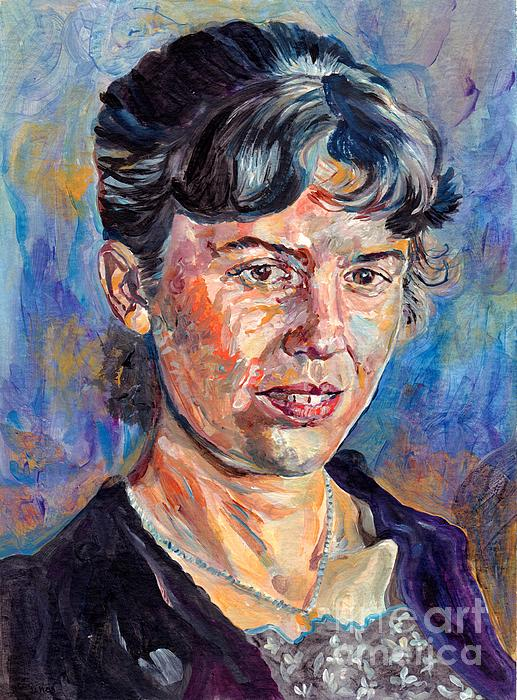

ART IN THE SHADOWS
Beyond poetry, Plath’s creativity knew no bounds—sketches, paintings, and expressions of a restless mind.
A delicate sketch, capturing a fleeting moment of thought.
A portrayal of solitude, drawn in ink and isolation.

Lines that tell a story—each stroke a whisper of the past.
SYLVIA'S VISUAL LANGUAGE
Plath’s artistic expressions often paralleled the themes of her poetry—loneliness, identity, and the passage of time. Her art, though lesser-known, was another vessel for her emotions, a way to communicate what words sometimes could not.